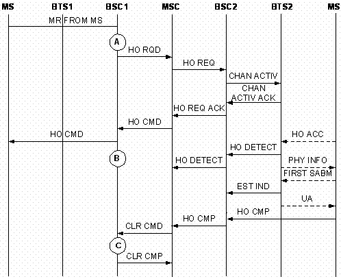

Measurement Counters
| ID | Counter | Description |
|---|---|---|
| 1278081421 | CELL.INTERBSC.OUTCELL.HO.CMD.SD.NOT.INCLUDE.DR.900.900 | H3310W:Outgoing External Inter-Cell Handover Commands (SDCCH) (Excluding Directed Retry) (900/850/810-900/850/810) |
| 1278081422 | CELL.INTERBSC.OUTCELL.HO.CMD.SD.NOT.INCLUDE.DR.1800.1800 | H3310X:Outgoing External Inter-Cell Handover Commands (SDCCH) (Excluding Directed Retry) (1800/1900-1800/1900) |
| 1278081423 | CELL.INTERBSC.OUTCELL.HO.CMD.SD.NOT.INCLUDE.DR.900.1800 | H3310Y:Outgoing External Inter-Cell Handover Commands (SDCCH) (Excluding Directed Retry) (900/850/810-1800/1900) |
| 1278081424 | CELL.INTERBSC.OUTCELL.HO.CMD.SD.NOT.INCLUDE.DR.1800.900 | H3310Z:Outgoing External Inter-Cell Handover Commands (SDCCH) (Excluding Directed Retry) (1800/1900-900/850/810) |
| 1278081425 | CELL.INTERBSC.OUTCELL.HO.CMD.TCHF.NOT.INCLUDE.DR.900.900 | H3317W:Outgoing External Inter-Cell Handover Commands (TCHF) (Excluding Directed Retry) (900/850/810-900/850/810) |
| 1278081426 | CELL.INTERBSC.OUTCELL.HO.CMD.TCHF.NOT.INCLUDE.DR.1800.1800 | H3317X:Outgoing External Inter-Cell Handover Commands (TCHF) (Excluding Directed Retry) (1800/1900-1800/1900) |
| 1278081427 | CELL.INTERBSC.OUTCELL.HO.CMD.TCHF.NOT.INCLUDE.DR.900.1800 | H3317Y:Outgoing External Inter-Cell Handover Commands (TCHF) (Excluding Directed Retry) (900/850/810-1800/1900) |
| 1278081428 | CELL.INTERBSC.OUTCELL.HO.CMD.TCHF.NOT.INCLUDE.DR.1800.900 | H3317Z:Outgoing External Inter-Cell Handover Commands (TCHF) (Excluding Directed Retry) (1800/1900-900/850/810) |
| 1278081429 | CELL.INTERBSC.OUTCELL.HO.CMD.TCHH.NOT.INCLUDE.DR.900.900 | H3318W:Outgoing External Inter-Cell Handover Commands (TCHH) (Excluding Directed Retry) (900/850/810-900/850/810) |
| 1278081430 | CELL.INTERBSC.OUTCELL.HO.CMD.TCHH.NOT.INCLUDE.DR.1800.1800 | H3318X:Outgoing External Inter-Cell Handover Commands (TCHH) (Excluding Directed Retry) (1800/1900-1800/1900) |
| 1278081431 | CELL.INTERBSC.OUTCELL.HO.CMD.TCHH.NOT.INCLUDE.DR.900.1800 | H3318Y:Outgoing External Inter-Cell Handover Commands (TCHH) (Excluding Directed Retry) (900/850/810-1800/1900) |
| 1278081432 | CELL.INTERBSC.OUTCELL.HO.CMD.TCHH.NOT.INCLUDE.DR.1800.900 | H3318Z:Outgoing External Inter-Cell Handover Commands (TCHH) (Excluding Directed Retry) (1800/1900-900/850/810) |
| 1278081433 | CELL.INTERBSC.OUTCELL.HO.CMD.DR.900.900 | H3311W:Outgoing External Inter-Cell Handover Commands (Directed Retry) (900/850/810-900/850/810) |
| 1278081434 | CELL.INTERBSC.OUTCELL.HO.CMD.DR.1800.1800 | H3311X:Outgoing External Inter-Cell Handover Commands (Directed Retry) (1800/1900-1800/1900) |
| 1278081435 | CELL.INTERBSC.OUTCELL.HO.CMD.DR.900.1800 | H3311Y:Outgoing External Inter-Cell Handover Commands (Directed Retry) (900/850/810-1800/1900) |
| 1278081436 | CELL.INTERBSC.OUTCELL.HO.CMD.DR.1800.900 | H3311Z:Outgoing External Inter-Cell Handover Commands (Directed Retry) (1800/1900-900/850/810) |
| 1278081465 | CELL.INTERBSC.OUTCELL.HO.CMD.UL.QLTY | H331A:Outgoing External Inter-Cell Handover Commands (Uplink Quality) |
| 1278081466 | CELL.INTERBSC.OUTCELL.HO.CMD.DL.QLTY | H331B:Outgoing External Inter-Cell Handover Commands (Downlink Quality) |
| 1278081467 | CELL.INTERBSC.OUTCELL.HO.CMD.UL.RXL | H331C:Outgoing External Inter-Cell Handover Commands (Uplink Strength) |
| 1278081468 | CELL.INTERBSC.OUTCELL.HO.CMD.DL.RXL | H331D:Outgoing External Inter-Cell Handover Commands (Downlink Strength) |
| 1278081469 | CELL.INTERBSC.OUTCELL.HO.CMD.TA | H331E:Outgoing External Inter-Cell Handover Commands (Timing Advance) |
| 1278081470 | CELL.INTERBSC.OUTCELL.HO.CMD.BETTER.CELL | H331F:Outgoing External Inter-Cell Handover Commands (Better Cell) |
| 1278081471 | CELL.INTERBSC.OUTCELL.HO.CMD.LOAD | H331G:Outgoing External Inter-Cell Handover Commands (Load) |
| 1278081472 | CELL.INTERBSC.OUTCELL.HO.CMD.RAPID.LEV.DROP | H331H:Outgoing External Inter-Cell Handover Commands (Rapid Level Drop) |
| 1278081473 | CELL.INTERBSC.OUTCELL.HO.CMD.MSC.INTERVENTION | H331I:Outgoing External Inter-Cell Handover Commands (MSC Intervention) |
| 1278081474 | CELL.INTERBSC.OUTCELL.HO.CMD.OM.INTERVENTION | H331J:Outgoing External Inter-Cell Handover Commands (OM Intervention) |
| 1278081476 | CELL.INTERBSC.OUTCELL.HO.CMD.OTHER | H331L:Outgoing External Inter-Cell Handover Commands (Other Causes) |
| 1278081542 | CELL.INTERBSC.OUTCELL.HO.CMD.DIFFERENT.SIG.POINT | H3313:Outgoing External Inter-Cell Handover Commands (Different Signaling Points) |
| 1278081568 | CELL.INTERBSC.OUTCELL.HO.CMD.BSC.LOOP | H331Aa:Number of Outgoing External Inter-Cell Handover Commands During BSC Local Switch |
| 1278081569 | CELL.INTERBSC.OUTCELL.HO.CMD.BTS.LOOP | H371P:Number of Outgoing External Inter-Cell Handover Commands During BTS Local Switch |
Description
After sending the HO RQD message to the MSC, the BSC receives the HO RQD ACK message containing the HO CMD message from the MSC. Then, the BSC sends the HO CMD message to the MS. The specific counter provides the number of outgoing external inter-cell handover commands sent by the BSC in the originating cell. With the Outgoing External Inter-Cell Handover Requests and the Failed Outgoing External Inter-Cell Handovers, this counter determines the outgoing external inter-cell handover performance.
The following counters provide the number of outgoing external inter-cell handover requests during the handovers initiated based on the handover algorithm (excluding directed retry) when the handover occurs between the frequency. The target channel for handover can be SDCCH, TCHF, or TCHH. They are measured when the BSC sends the HO CMD message to the MS.
- H3310W:CELL.INTERBSC.OUTCELL.HO.CMD.SD.NOT.INCLUDE.DR.900.900
- H3310X:CELL.INTERBSC.OUTCELL.HO.CMD.SD.NOT.INCLUDE.DR.1800.1800
- H3310Y:CELL.INTERBSC.OUTCELL.HO.CMD.SD.NOT.INCLUDE.DR.900.1800
- H3310Z:CELL.INTERBSC.OUTCELL.HO.CMD.SD.NOT.INCLUDE.DR.1800.900
- H3317W:CELL.INTERBSC.OUTCELL.HO.CMD.TCHF.NOT.INCLUDE.DR.900.900
- H3317X:CELL.INTERBSC.OUTCELL.HO.CMD.TCHF.NOT.INCLUDE.DR.1800.1800
- H3317Y:CELL.INTERBSC.OUTCELL.HO.CMD.TCHF.NOT.INCLUDE.DR.900.1800
- H3317Z:CELL.INTERBSC.OUTCELL.HO.CMD.TCHF.NOT.INCLUDE.DR.1800.900
- H3318W:CELL.INTERBSC.OUTCELL.HO.CMD.TCHH.NOT.INCLUDE.DR.900.900
- H3318X:CELL.INTERBSC.OUTCELL.HO.CMD.TCHH.NOT.INCLUDE.DR.1800.1800
- H3318Y:CELL.INTERBSC.OUTCELL.HO.CMD.TCHH.NOT.INCLUDE.DR.900.1800 H3318Z:CELL.INTERBSC.OUTCELL.HO.CMD.TCHH.NOT.INCLUDE.DR.1800.900
- H3311W:CELL.INTERBSC.OUTCELL.HO.CMD.DR.900.900
- H3311X:CELL.INTERBSC.OUTCELL.HO.CMD.DR.1800.1800
- H3311Y:CELL.INTERBSC.OUTCELL.HO.CMD.DR.900.1800
- H3311Z:CELL.INTERBSC.OUTCELL.HO.CMD.DR.1800.900
The following counters provide the number of outgoing external inter-cell handover commands initiated by the BSC using BQ handover algorithm based on the UL or DL receive quality in the MR. They are measured when the BSC sends the HO CMD message to the MS.
- H331A:CELL.INTERBSC.OUTCELL.HO.CMD.UL.QLTY
- H331B:CELL.INTERBSC.OUTCELL.HO.CMD.DL.QLTY
The band quality (BQ) handover algorithm is for emergency handover based on the uplink or downlink receive quality over the Um interface. If the uplink quality rank is greater than or equal to the UL Qual. Threshold, the BQ handover is initiated because of bad uplink quality. If downlink quality rank is greater than or equal to the DL Qual. Threshold, the BQ handover is initiated because of bad downlink quality.
- H331C:CELL.INTERBSC.OUTCELL.HO.CMD.UL.RXL
- H331D:CELL.INTERBSC.OUTCELL.HO.CMD.DL.RXL
- H331E:CELL.INTERBSC.OUTCELL.HO.CMD.TA
The TA handover algorithm is for emergency handover based on the TA value reported by the BTS. If the TA value is greater than the TA Threshold, a TA handover is initiated.
- H331F:CELL.INTERBSC.OUTCELL.HO.CMD.BETTER.CELL
The better 3G cell handover algorithm is used to determine whether to initiate a handover based on the measurement object. If the measurement object is RSCP and the measured result is greater than the RSCP Threshold for Better 3G Cell HO, or if the measurement object is Ec/No and the measured result is greater than the Ec/NO Threshold for Better 3G Cell HO, then a handover to a 3G better cell is initiated.
- H331G:CELL.INTERBSC.OUTCELL.HO.CMD.LOAD
- H331H:CELL.INTERBSC.OUTCELL.HO.CMD.RAPID.LEV.DROP
The following counter provides the number of outgoing external inter-cell handover commands initiated by the BSC based on the HANDOVER CANDIDATE ENQUIRE message received from the MSC. It is measured when the BSC sends the HO CMD message to the MS.
- H331I:CELL.INTERBSC.OUTCELL.HO.CMD.MSC.INTERVENTION
The MSs that are forced to perform handover are as many as the specified number of MSs contained in the message.
The following counter provides the number of outgoing external inter-cell handover commands initiated manually by the maintenance personnel from the maintenance terminal. It is measured when the BSC sends the HO CMD message to the MS.
- H331J:CELL.INTERBSC.OUTCELL.HO.CMD.OM.INTERVENTION
- H331L:CELL.INTERBSC.OUTCELL.HO.CMD.OTHER
- H3303:CELL.INTERBSC.OUTCELL.HO.CMD.DIFFERENT.SIG.POINT
- H331Aa:CELL.INTERBSC.OUTCELL.HO.CMD.BSC.LOOP
- H371P:CELL.INTERBSC.OUTCELL.HO.CMD.BTS.LOOP
Measurement point
As shown in Figure 1 and Figure 2, the counter is measured at B when the BSC sends the HO CMD message to the MS.

| Measurement points | Description |
|---|---|
| A | Measurement point of outgoing external inter-cell handover requests (excluding directed retry) |
| B | Measurement point of outgoing external inter-cell handover responses (excluding directed retry) |
| C | Measurement point of successful outgoing external inter-cell handovers (excluding directed retry) |

| Measurement points | Description |
|---|---|
| A | Measurement point of outgoing external inter-cell handover requests (excluding directed retry) |
| B | Measurement point of outgoing external inter-cell handover responses (excluding directed retry) |
| C | Measurement point of successful outgoing external inter-cell handovers (excluding directed retry) |
Formula
None
Unit
None
Related Features
| Counter | Feature ID | Feature Name |
|---|---|---|
| CELL.INTERBSC.OUTCELL.HO.CMD.SD.NOT.INCLUDE.DR.900.900 |
GBFD-110601 GBFD-510501 GBFD-110608 |
HUAWEI I Handover HUAWEI II Handover SDCCH Handover |
| CELL.INTERBSC.OUTCELL.HO.CMD.SD.NOT.INCLUDE.DR.1800.1800 |
GBFD-110601 GBFD-510501 GBFD-110608 |
HUAWEI I Handover HUAWEI II Handover SDCCH Handover |
| CELL.INTERBSC.OUTCELL.HO.CMD.SD.NOT.INCLUDE.DR.900.1800 |
GBFD-110601 GBFD-510501 GBFD-110608 |
HUAWEI I Handover HUAWEI II Handover SDCCH Handover |
| CELL.INTERBSC.OUTCELL.HO.CMD.SD.NOT.INCLUDE.DR.1800.900 |
GBFD-110601 GBFD-510501 GBFD-110608 |
HUAWEI I Handover HUAWEI II Handover SDCCH Handover |
| CELL.INTERBSC.OUTCELL.HO.CMD.TCHF.NOT.INCLUDE.DR.900.900 |
GBFD-110601 GBFD-510501 |
HUAWEI I Handover HUAWEI II Handover |
| CELL.INTERBSC.OUTCELL.HO.CMD.TCHF.NOT.INCLUDE.DR.1800.1800 |
GBFD-110601 GBFD-510501 |
HUAWEI I Handover HUAWEI II Handover |
| CELL.INTERBSC.OUTCELL.HO.CMD.TCHF.NOT.INCLUDE.DR.900.1800 |
GBFD-110601 GBFD-510501 |
HUAWEI I Handover HUAWEI II Handover |
| CELL.INTERBSC.OUTCELL.HO.CMD.TCHF.NOT.INCLUDE.DR.1800.900 |
GBFD-110601 GBFD-510501 |
HUAWEI I Handover HUAWEI II Handover |
| CELL.INTERBSC.OUTCELL.HO.CMD.TCHH.NOT.INCLUDE.DR.900.900 |
GBFD-113401 |
Half Rate Speech |
| CELL.INTERBSC.OUTCELL.HO.CMD.TCHH.NOT.INCLUDE.DR.1800.1800 |
GBFD-113401 |
Half Rate Speech |
| CELL.INTERBSC.OUTCELL.HO.CMD.TCHH.NOT.INCLUDE.DR.900.1800 |
GBFD-113401 |
Half Rate Speech |
| CELL.INTERBSC.OUTCELL.HO.CMD.TCHH.NOT.INCLUDE.DR.1800.900 |
GBFD-113401 |
Half Rate Speech |
| CELL.INTERBSC.OUTCELL.HO.CMD.DR.900.900 |
GBFD-110601 GBFD-510501 GBFD-110607 |
HUAWEI I Handover HUAWEI II Handover Direct Retry |
| CELL.INTERBSC.OUTCELL.HO.CMD.DR.1800.1800 |
GBFD-110601 GBFD-510501 GBFD-110607 |
HUAWEI I Handover HUAWEI II Handover Direct Retry |
| CELL.INTERBSC.OUTCELL.HO.CMD.DR.900.1800 |
GBFD-110601 GBFD-510501 GBFD-110607 |
HUAWEI I Handover HUAWEI II Handover Direct Retry |
| CELL.INTERBSC.OUTCELL.HO.CMD.DR.1800.900 |
GBFD-110601 GBFD-510501 GBFD-110607 |
HUAWEI I Handover HUAWEI II Handover Direct Retry |
| CELL.INTERBSC.OUTCELL.HO.CMD.UL.QLTY |
GBFD-110601 GBFD-510501 |
HUAWEI I Handover HUAWEI II Handover |
| CELL.INTERBSC.OUTCELL.HO.CMD.DL.QLTY |
GBFD-110601 GBFD-510501 |
HUAWEI I Handover HUAWEI II Handover |
| CELL.INTERBSC.OUTCELL.HO.CMD.UL.RXL |
GBFD-110601 GBFD-510501 |
HUAWEI I Handover HUAWEI II Handover |
| CELL.INTERBSC.OUTCELL.HO.CMD.DL.RXL |
GBFD-110601 GBFD-510501 |
HUAWEI I Handover HUAWEI II Handover |
| CELL.INTERBSC.OUTCELL.HO.CMD.TA |
GBFD-110601 GBFD-510501 |
HUAWEI I Handover HUAWEI II Handover |
| CELL.INTERBSC.OUTCELL.HO.CMD.BETTER.CELL |
GBFD-110601 GBFD-510501 |
HUAWEI I Handover HUAWEI II Handover |
| CELL.INTERBSC.OUTCELL.HO.CMD.LOAD |
GBFD-110601 GBFD-510501 |
HUAWEI I Handover HUAWEI II Handover |
| CELL.INTERBSC.OUTCELL.HO.CMD.RAPID.LEV.DROP |
GBFD-110601 GBFD-510501 |
HUAWEI I Handover HUAWEI II Handover |
| CELL.INTERBSC.OUTCELL.HO.CMD.MSC.INTERVENTION |
GBFD-110601 GBFD-510501 |
HUAWEI I Handover HUAWEI II Handover |
| CELL.INTERBSC.OUTCELL.HO.CMD.OM.INTERVENTION |
GBFD-110601 GBFD-510501 |
HUAWEI I Handover HUAWEI II Handover |
| CELL.INTERBSC.OUTCELL.HO.CMD.OTHER |
GBFD-110601 GBFD-510501 |
HUAWEI I Handover HUAWEI II Handover |
| CELL.INTERBSC.OUTCELL.HO.CMD.DIFFERENT.SIG.POINT |
GBFD-110601 GBFD-510501 GBFD-115301 |
HUAWEI I Handover HUAWEI II Handover Local Multiple Signaling Points |
| CELL.INTERBSC.OUTCELL.HO.CMD.BSC.LOOP |
GBFD-117701 |
BSC Local Switch |
| CELL.INTERBSC.OUTCELL.HO.CMD.BTS.LOOP |
GBFD-117702 |
BTS Local Switch |